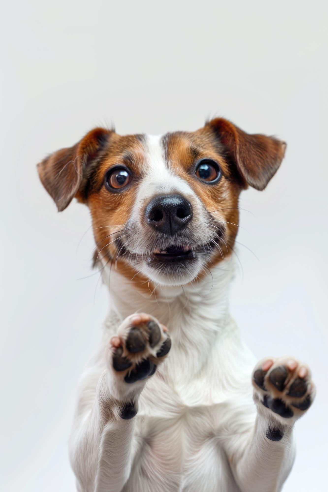
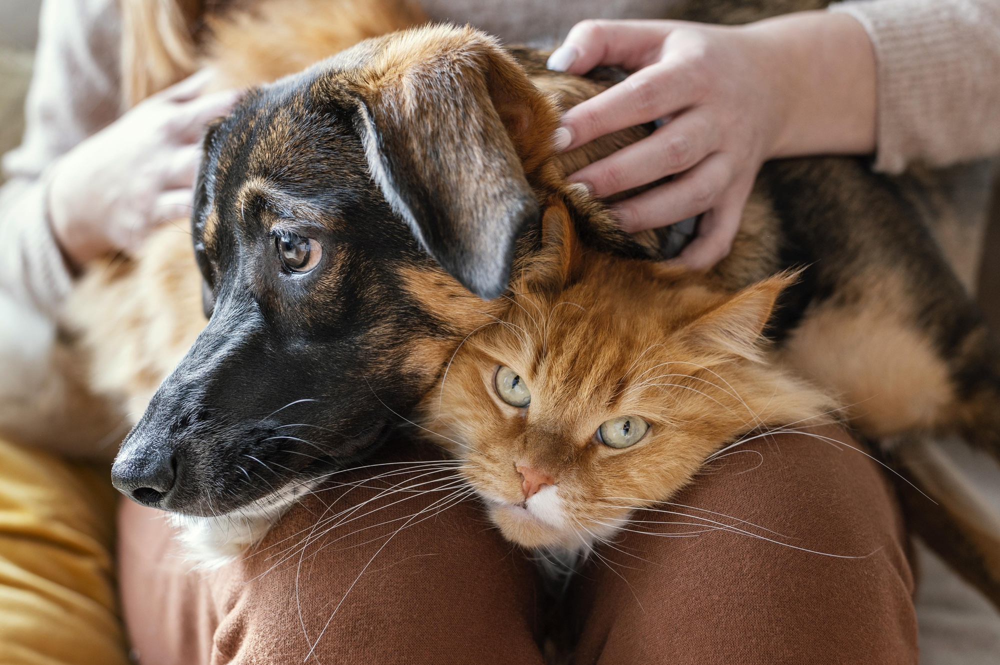
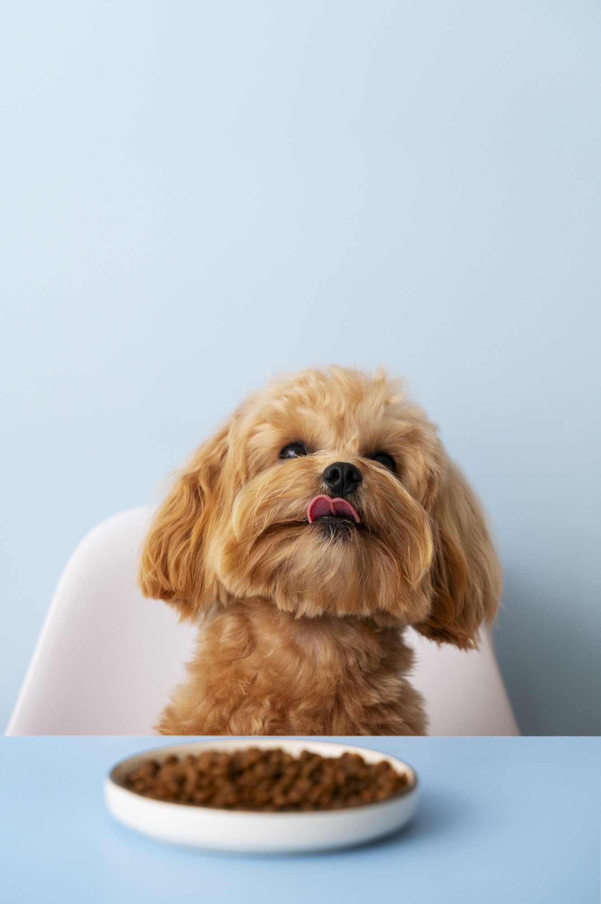
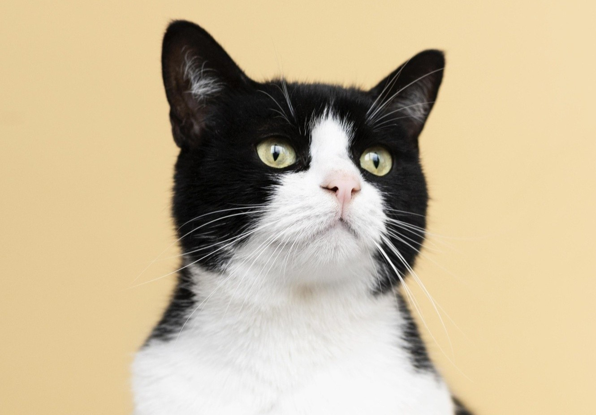
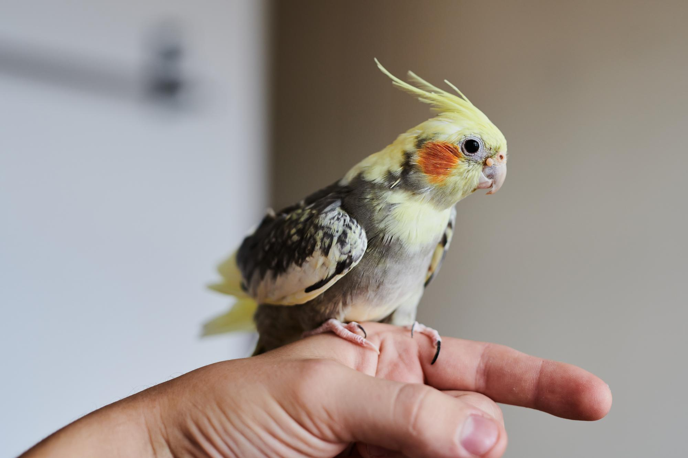
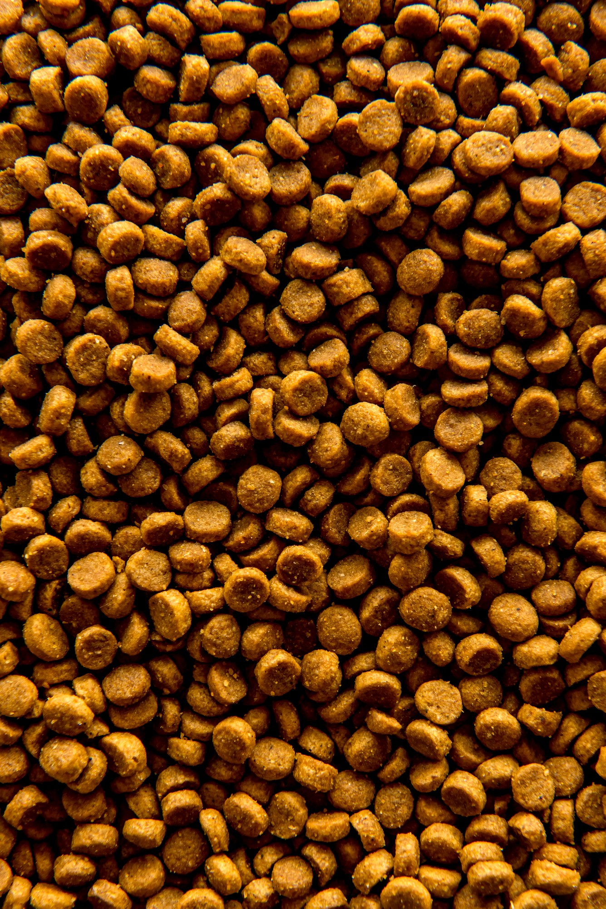
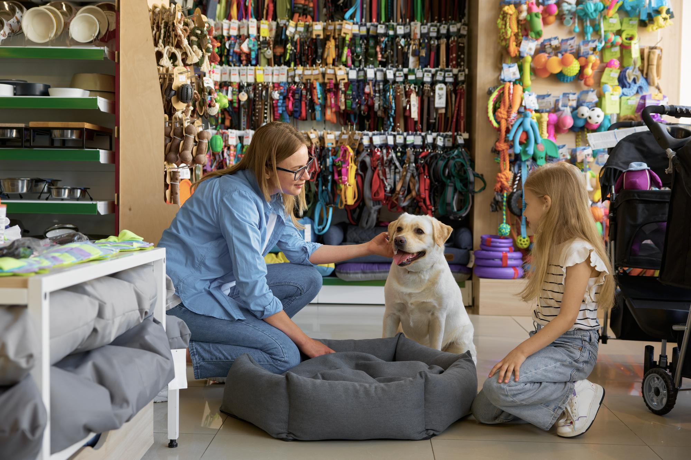
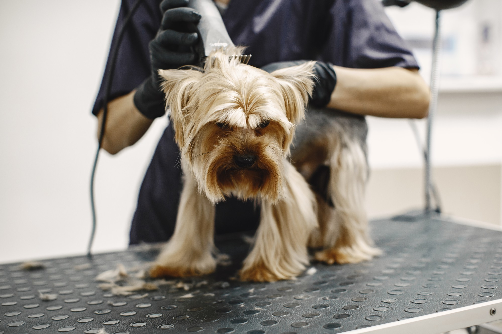
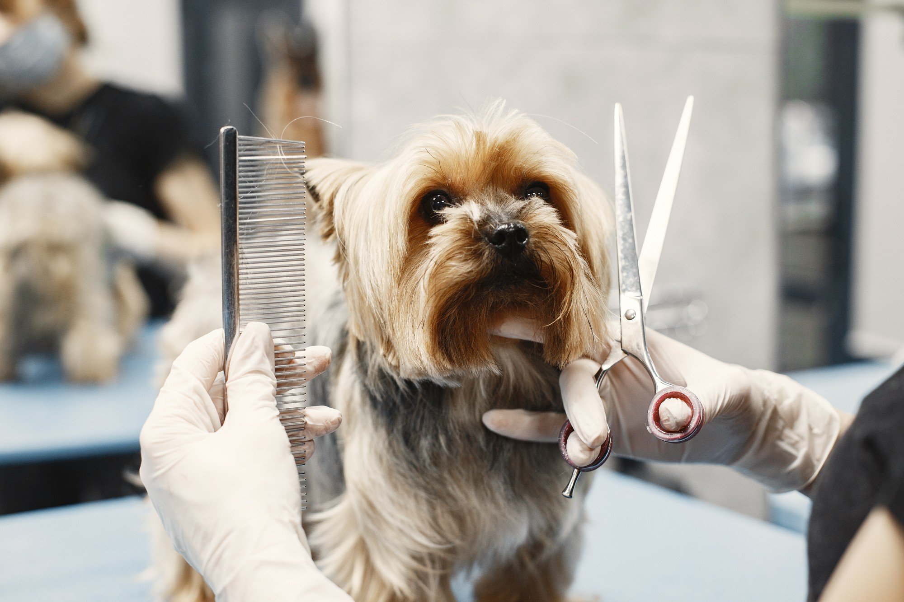
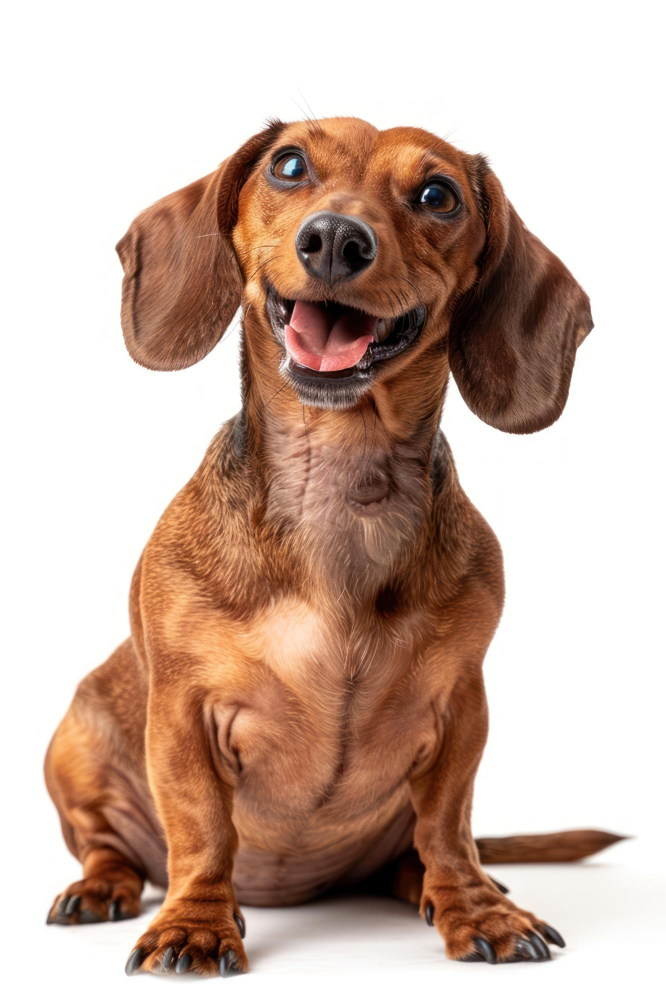

01
Cães
Rações, petiscos, brinquedos, higiene e acessórios.

PET SHOP • CASA DE RAÇÕES
Rações, acessórios, petiscos e cuidados para deixar a rotina do seu pet mais leve.

Cuidado em cada detalheSobre a loja
A Casa do Pet Rações foi pensada como uma loja de bairro acolhedora, prática e próxima de quem convive com animais todos os dias.
O espaço reúne produtos para alimentação, diversão, higiene e bem-estar, com uma comunicação simples e direta.
Encontre o que precisa
Uma vitrine pensada para apresentar as principais categorias de uma casa de rações.

Rações, petiscos, brinquedos, higiene e acessórios.

Alimentação, areia, brinquedos e acessórios.

Alimentos e itens para o cuidado diário.
Produtos para coelhos, hamsters e outros pets.
Destaques

ALIMENTAÇÃO
ACESSÓRIOS
ROTINA
BEM-ESTARPreços, marcas e disponibilidade são ilustrativos neste projeto demonstrativo.
Uma vitrine completa
O site pode apresentar as principais categorias da loja sem transformar a experiência em um e-commerce pesado.
Serviços
Uma apresentação enxuta dos serviços que podem fazer parte de um pet shop.
Cuidados de higiene e aparência para o pet.
Consulte a disponibilidade de delivery para sua região.
Um cuidado rápido para a rotina do animal.
Ajuda para encontrar produtos adequados à rotina do pet.
Pensado para o bairro
Galeria
As imagens fornecidas foram distribuídas pela página de acordo com o assunto e a composição.

Visite ou fale com a loja
Consulte produtos, disponibilidade e informações pelo WhatsApp.
Chamar no WhatsApp ↗